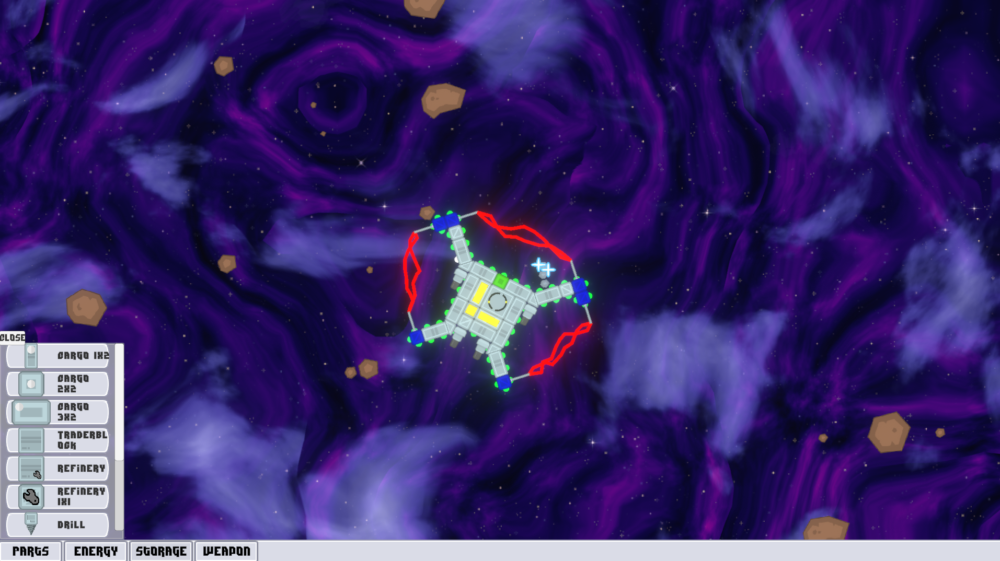
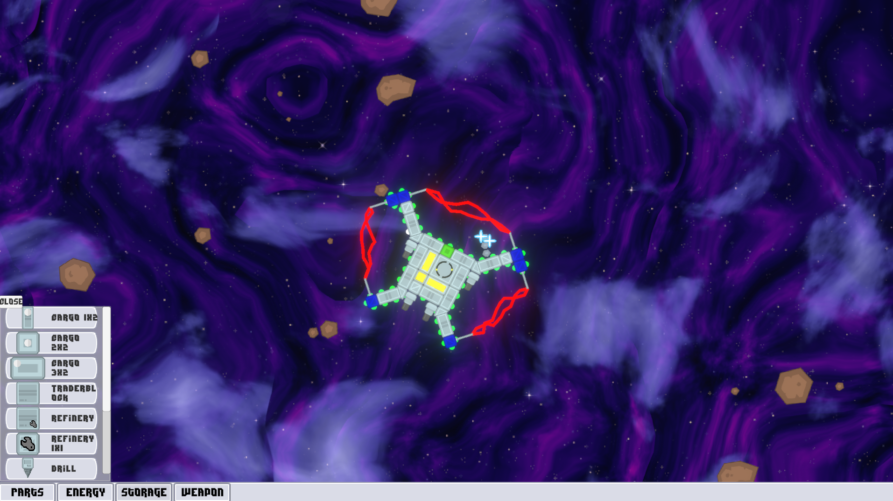
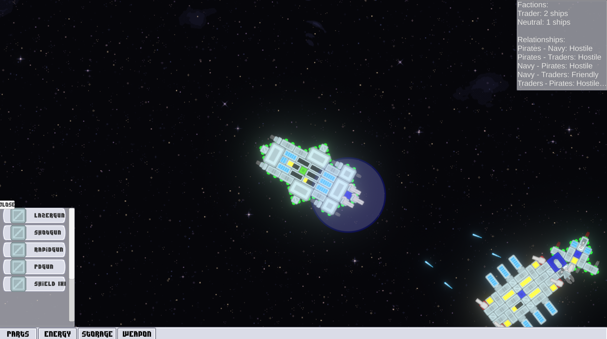
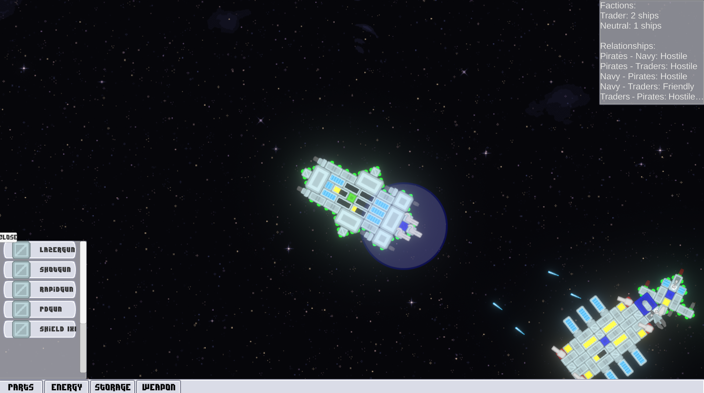

Game Overview
About the Game
"Modular Spaceship Builder" is an evolved 2D space game where players design and pilot custom spacecraft using a modular component system. Engage in dynamic combat, manage resources, and navigate faction relationships in a procedurally generated universe.
Inspired by classics like Captain Forever, this reimagined version introduces advanced ship mechanics, faction dynamics, and resource management, built from the ground up with lessons learned from my previous attempt.
Game Details
- Platform: Web Browser
- Engine: Unity
- Status: In Active Development
- Controls: Mouse (Drag/Connect), Space (Thrust), Q/E (Rotate), F (Collect Cargo), T (Weapons), S (Shields), Right Click (AI AutoBattle)
Gameplay Mechanics
Ship Construction
Build unique spacecraft using a snap-based modular system, tailoring your ship’s design to your playstyle:
- Drag-and-drop ship parts with connection points for intuitive assembly
- Dynamic physics-based assembly ensures realistic movement and stability
- Modules: Thrusters, Weapons, Shields, Cargo Bays—each with unique functions
- Station construction with trading capabilities to establish your presence in space
- Attach thrusters strategically for precise control
- Customize thruster placement to balance speed and agility
Combat System
Engage in tactical space battles where strategy and skill determine victory:
- Multiple weapon types (Lasers, Turrets, Missiles)
- Mobility-focused combat with thruster-driven movement
- Shield and energy management for survival
- Faction-based AI with dynamic responses
- AI behavior switching based on faction goals
- Critical energy allocation for weapons and shields
Faction & Resources (WIP)
Interact with a living universe where factions and resources shape your journey:
- Faction relationships influence AI behavior
- Cargo trading and refinery systems (WIP)
- Dynamic faction-based AI ships
- Ship spawning via trader stations (WIP)
- AI ships collect cargo and defend stations
- Adaptive stations for refining or defense
Technical Overview
Core Systems
The game leverages Unity's 2D physics engine with custom implementations:
- Faction System: Dictionary-based relationship management
- Ship Mechanics: Modular component system
- Physics: Rigidbody2D with custom logic
- AI: Responsive faction-based behaviors
Development Challenges
Key improvements from the original version:
- Replaced unstable spring joints with rigid connections
- Optimized module caching for performance
- Interfaces for cleaner more abstracted code
- Smarter AI less rammy
Class Diagrams
Media
Gameplay Demo
Current Development Screenshots
 



Older Development Screenshots

 


Previous Attempt Screenshots
These are from a previous attempt, scrapped due to performance issues and part connection problems, though I liked the spring-based wiggle of the parts.


Future Plans
Possible future updates:
- Faction reputation system affecting relationships
- Procedural galaxy generation
- Enhanced AI behaviors with patrol and trade routes
- Persistent save system for ship designs